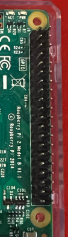
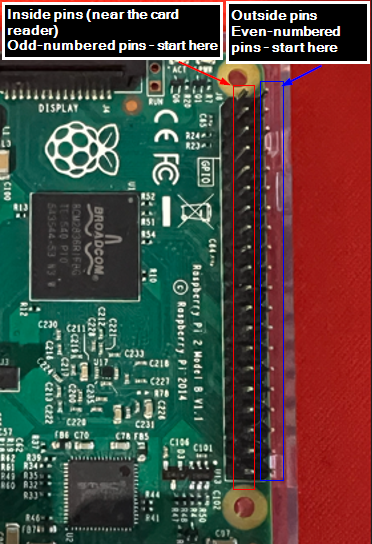
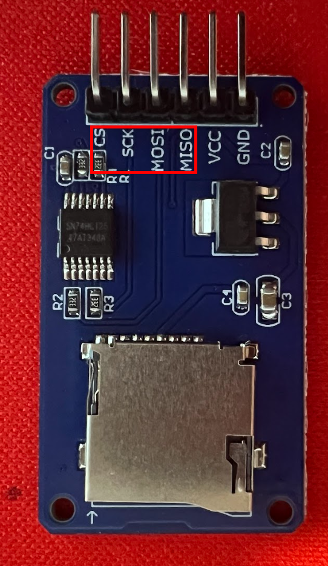
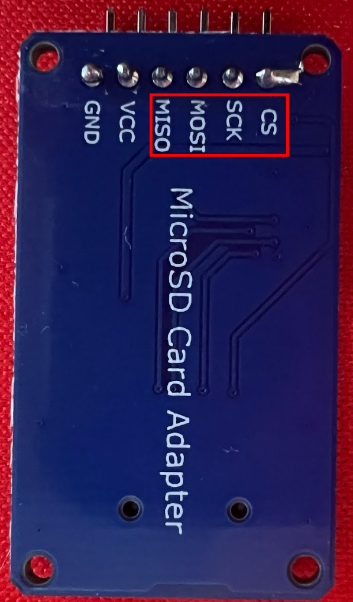
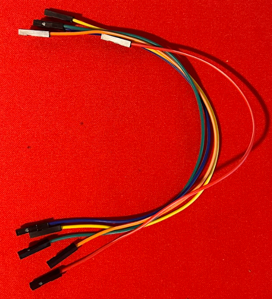
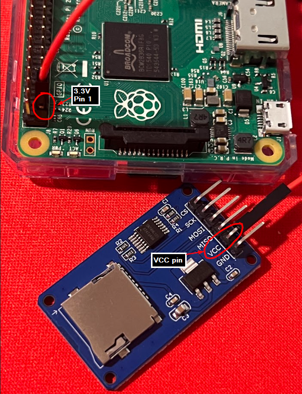
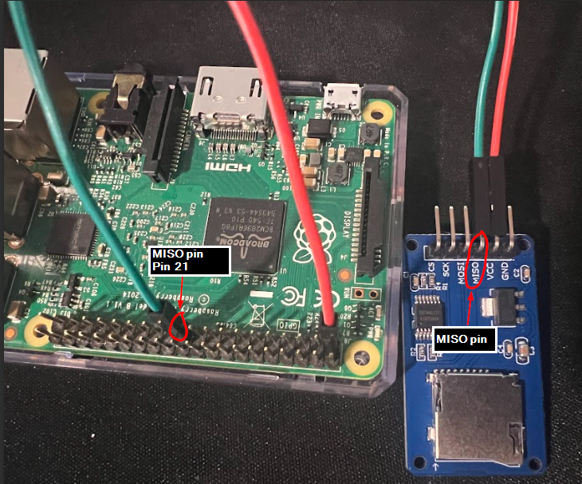
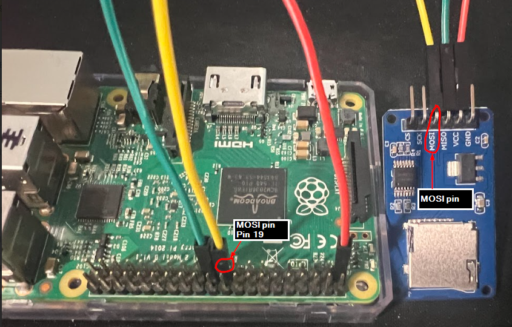
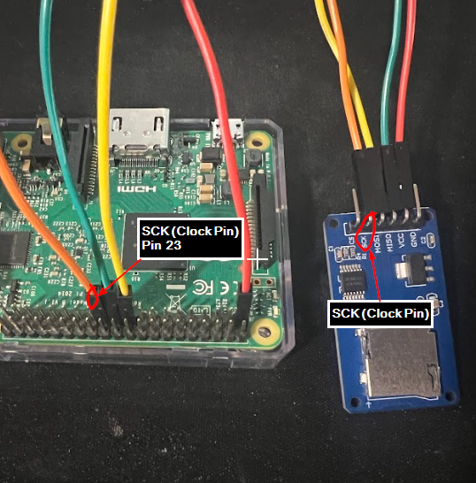
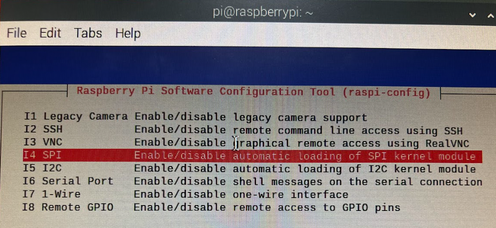

SPI [Serial Peripheral Interface]⚓︎
What is SPI⚓︎
SPI stands for Serial Peripheral Interface. It's essentially a synchronous serial communication protocol that's used for short-distance communication, typically between a microcontroller (like a Raspberry Pi or an Arduino) and one or more peripheral devices like sensors, SD cards, or other modules. So that's the basic idea!
Where is it used now?⚓︎
SPI is used behind the scenes in a lot of common electronics. For instance, if you've got a device with an SD card reader-like a camera or even some smartphones - that SD card reader is probably using SPI to communicate with the main processor.
Touchscreens in appliances - like a smart fridge panel or a fancy thermostat screen - which often rely on SPI to send data quickly between the controller and the display.
SPI Architecture⚓︎
This consists of devices (Master and Secondary) and the signals used between the devices.
Devices⚓︎
- Master Device : This controls the communication and provides the clock signal(more on this in the signal section below).
e.g. A Raspberry Pi or Arduino.
- Secondary Device : These are the peripheral devices e.g. SD card, Display.
Signals⚓︎
- SCK (Serial Clock Line) : Generated by the master device. Every time there is clock pulse, there is data transfer on MOSI/MISO line.
- MOSI (Master Out Secondary In) : The line that carries data from the master to the secondary device.
- MISO (Master In Secondary Out) : The line that carries data from the secondary device back to the master.
- SS (Secondary Select) : The line that is used to select which secondary device you are currently talking to if you have more than one.
Flow⚓︎
-
Select the device (SS) The master pulls the SS line low to select the device it wants to communicate with.
-
Set the timing (Clock) The master generates clock pulses that control when data is transferred.
-
Transfer the data (MOSI / MISO) Data is exchanged one bit per clock pulse, with the master sending data on MOSI and the device optionally responding on MISO.
-
End the communication The clock stops and SS is pulled high, ending the transaction.
flowchart TB
%% ───────── Control ─────────
subgraph Control["Control / Device Selection (SS)"]
direction TB
A[Master decides to communicate]
B[SS pulled LOW<br/>Device selected]
end
%% ───────── Timing ─────────
subgraph Timing["Timing (Clock / SCK)"]
direction TB
C[Clock starts toggling]
D[Clock pulses define bit timing]
end
%% ───────── Data ─────────
subgraph Data["Data Transfer (MOSI / MISO)"]
direction TB
E[Master places bit on MOSI]
F[Clock edge occurs]
G[Device samples bit]
H{More bits?}
end
%% ───────── End ─────────
subgraph End["End of Transaction"]
direction TB
I[Clock stops]
J[SS pulled HIGH<br/>Device deselected]
end
%% ───────── Flow ─────────
A --> B --> C --> D --> E --> F --> G --> H
H -->|Yes| E
H -->|No| I --> JThe setup⚓︎
- Wiring
- Setting up the Raspberry Pi for SPI
- Testing without an actual MicroSD card
- Testing with an actual MicroSD card
Wiring⚓︎
The time for action!
I used :
- Raspberry PI 2 Model B V 1.1 as master.
- MicroSD card adapter as secondary device.
- MicroSD card
- Jumper wires (female to female)
Raspberry Pi⚓︎
One of the most important section in the Pi are the pins.
| Raspiberry Pi | Pins in the Raspberry Pi |
|---|---|
 |
 |
| Raspberry Pi pins | INSIDE (Odd Pins) |
Purpose | OUTSIDE (Even Pins) |
Purpose |
|---|---|---|---|---|
|  | ||||
| Pin 1 | 3.3V Power | Pin 2 | 5V Power | |
| Pin 3 | GPIO2 / I²C SDA1 | Pin 4 | 5V Power | |
| Pin 5 | GPIO3 / I²C SCL1 | Pin 6 | GND | |
| Pin 7 | GPIO4 | Pin 8 | GPIO14 / UART TXD | |
| Pin 9 | GND | Pin 10 | GPIO15 / UART RXD | |
| Pin 11 | GPIO17 | Pin 12 | GPIO18 / PWM0 | |
| Pin 13 | GPIO27 | Pin 14 | GND | |
| Pin 15 | GPIO22 | Pin 16 | GPIO23 | |
| Pin 17 | 3.3V Power | Pin 18 | GPIO24 | |
| Pin 19 | GPIO10 / SPI MOSI | Pin 20 | GND | |
| Pin 21 | GPIO9 / SPI MISO | Pin 22 | GPIO25 | |
| Pin 23 | GPIO11 / SPI SCLK | Pin 24 | GPIO8 / SPI CS0 | |
| Pin 25 | GND | Pin 26 | GPIO7 / SPI CS1 | |
| Pin 27 | GPIO0 / ID_SD | Pin 28 | GPIO1 / ID_SC | |
| Pin 29 | GPIO5 | Pin 30 | GND | |
| Pin 31 | GPIO6 | Pin 32 | GPIO12 / PWM0 | |
| Pin 33 | GPIO13 / PWM1 | Pin 34 | GND | |
| Pin 35 | GPIO19 / PCM FS | Pin 36 | GPIO16 | |
| Pin 37 | GPIO26 | Pin 38 | GPIO20 / PCM DIN | |
| Pin 39 | GND | Pin 40 | GPIO21 / PCM DOUT |
MicroSD card adapter module⚓︎
Front and back side of the adapter module showing the CS, MOSI, MISO and SCK pins. The additional VCC (Voltage at the Common Collector) pin is to supply power from the 3.3V of Raspberry pi.
| Front side | Back side |
|---|---|
|  |  |
Jumper wires⚓︎
In this case we need female to female wires connecting the Raspberry Pi and MicroSD card module pins.

The wiring⚓︎
3.3V Pin from Raspberry Pi to VCC pin on the MicroSD module.

MISO/Pin 21 from Raspberry Pi to MISO pin on the MicroSD module.

MOSI/Pin 19 from Raspberry Pi to MOSI pin on the MicroSD module.

SCK(Clock pin)/Pin 23 from Raspberry Pi to SCK pin on the MicroSD module.

CS/SS(Chip Select/Secondary Select pin)/Pin 24 from Raspberry Pi to CS pin on the MicroSD module.

Ground/Pin 6 from Raspberry Pi to GND pin on the MicroSD module.

Setting up the Raspberry Pi for SPI communication⚓︎
Enable the SPI⚓︎
Connect to the Raspberry pi and open the Raspberry Pi config.
sudo raspi-config
Go to "System Options" and select "SPI - Enable/disable automatic loading of SPI kernel module".
| System options | Enable SPI |
|---|---|
 |
 |
Reboot the Pi.
reboot
SPI is now enabled.

We confirm by looking at the modules available on the Pi filesystem.
We can confirm and check if the kernel modules related to the SPI are loaded.
lsmod | grep spi
- spi_bcm2835 is the SPI driver specific to the Broadcom chip in the Raspberry Pi.
This tells us the hardware SPI interface is active. - spidev is the module that creates the /dev/spidev0.0 and /dev/spidev0.1 device files that user programs can interact with.
Below are the interfaces which our Python program (details later below) can open and talk to.
ls /dev/spidev*

To be absolutely sure, verify that SPI is enabled in the boot configuration
cat /boot/config.txt
Test⚓︎
import spidev
spi = spidev.SpiDev()
spi.open(0, 0) # bus 0, CS0
spi.max_speed_hz = 400000
spi.mode = 0
print("SPI opened successfully")